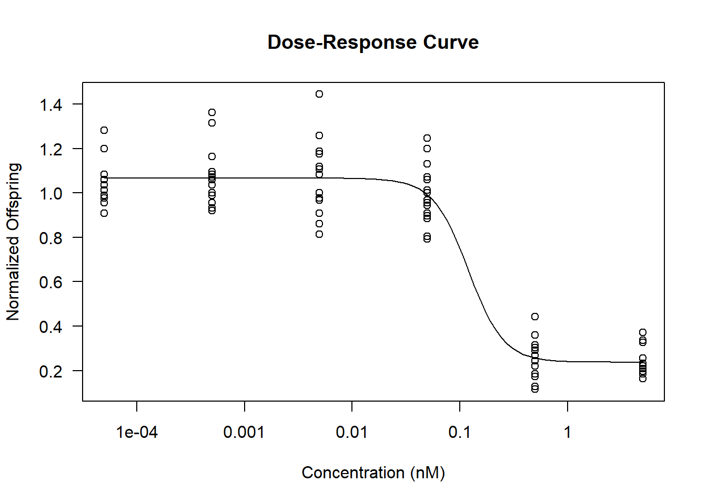

5 Reproducible science
5.1 Analysing the effect of various chemical compounds on the reproduction of C. elegans
## load nessesary library's
library(tidyverse)
library(readxl)
library(tools)
library(dplyr)
library(ggplot2)## Load the data file into R studio
## Select the columns needed for the analysis
data_CE_LIQ_FLOW <- readxl::read_excel(here::here("raw_data/data04a/CE.LIQ.FLOW.062_Tidydata.xlsx"),
col_names = TRUE, sheet = 1) %>%
select(RawData, compName, compConcentration, expType)
## Check data types
str(data_CE_LIQ_FLOW)## tibble [360 × 4] (S3: tbl_df/tbl/data.frame)
## $ RawData : num [1:360] 44 37 45 47 41 35 41 36 40 38 ...
## $ compName : chr [1:360] "2,6-diisopropylnaphthalene" "2,6-diisopropylnaphthalene" "2,6-diisopropylnaphthalene" "2,6-diisopropylnaphthalene" ...
## $ compConcentration: chr [1:360] "4.99" "4.99" "4.99" "4.99" ...
## $ expType : chr [1:360] "experiment" "experiment" "experiment" "experiment" ...## Change the data types
## Delete the NA values
clean_data_CE_LIQ_FLOW <- data_CE_LIQ_FLOW %>%
mutate(compConcentration = as.numeric(compConcentration),
compName = factor(compName),
expType = factor(expType)) %>% na.omit()
## Save the cleaned data set
saveRDS(clean_data_CE_LIQ_FLOW,
file = here::here("data/processed/V1_CE.LIQ.FLOW.062.RDS"))
## View summary
summary(clean_data_CE_LIQ_FLOW)## RawData compName compConcentration
## Min. : 0.00 2,6-diisopropylnaphthalene:90 Min. : 0.000000
## 1st Qu.: 51.25 decane :90 1st Qu.: 0.000499
## Median : 72.00 Ethanol :60 Median : 0.049900
## Mean : 68.10 naphthalene :84 Mean : 1.282013
## 3rd Qu.: 88.00 S-medium :30 3rd Qu.: 0.500000
## Max. :124.00 Max. :19.500000
## expType
## controlNegative: 30
## controlPositive: 30
## controlVehicleA: 30
## experiment :264
##
## ## Create a Scatter plot with jitter and a -log10-transformation
ggplot(clean_data_CE_LIQ_FLOW, aes(x = -log10(compConcentration),
y = RawData)) +
geom_point(position = position_jitter(width = 0.165, height = 0.2), aes(color = compName, shape = expType), alpha = 0.7) +
labs(title = "Relation between exposure to chemical compounds \nand offspring production in C. elegans",
x = "-log10(Compound concentration in nM)",
y = "C. elegans offspring",
color = "Compound",
shape = "Experiment Type") +
theme_minimal() Figure 5.1: a scatterplot showing the relation between the amount of offspring produced bij C. elegans after being exposed to different kinds of chemical compounds.
5.1.1 Normalization of the data
In the experiment C. elegans have been exposed to various chemical compounds to test the effect on the reproduction of C. elegans offspring. The amount of produced offspring have been counted per condition. To make sure the experiment is reliable controls have been tested as well.
The negative control serves as the reference group. It reprisents the normal reproduction rates of C. elegans without exposure to various chemical compounds.
The positive control is the group of C. elegans exposed to a known toxic chemical compound to confirm the assay can detect the adverse effects on the reproduction of C. elegans.
The vehicle control serves as a control to test if the vihicle itself does not effect the C. elegans. This control group is only exposed to the solvent (carrier) used to deliver the chemical compounds.
Together these controls establish a reliable baseline to verify assay sensitivity an specificity.
To make sure the there can be a clear comparison across treatment groups the data shown in the figure below has been normalized relative to the mean value of the negative control group. The average response of the negative control group was set to 1. The other values were scaled relative to this baseline. For example the value of the experiment is 0.5 would indicate that the reproduction rate of offspring is 50% compared to the control group. The normalization of the experimental values enables a clearer comparison across treatment groups and reduces the impact of inter-experimental variability. It also allows the effect sizes to be interpreted independently of the absolute scale.
## Calculate mean of the negative control
mean_control_negative <- clean_data_CE_LIQ_FLOW %>%
filter(expType == "controlNegative") %>%
summarise(mean_value = mean(RawData, na.rm = TRUE)) %>%
pull(mean_value)
## Add normalized column
normalized_data <- clean_data_CE_LIQ_FLOW %>%
mutate(normRawData = RawData / mean_control_negative)
## Scatter plot with the normalized data
ggplot(normalized_data, aes(x = -log10(compConcentration), y = normRawData)) +
geom_point(position = position_jitter(width = 0.165, height = 0.05),
aes(color = compName, shape = expType), alpha = 0.7) +
labs(title = "Normalized offspring production relative to controlNegative\nin C. elegans after chemical exposure",
x = "-log10(Compound concentration in nM)",
y = "Normalized offspring (relative to controlNegative)",
color = "Compound",
shape = "Experiment Type") +
theme_minimal()Figure 5.2: a scatterplot showing the relation between the amount of offspring produced bij C. elegans after being exposed to different kinds of chemical compounds with normalized data.
5.2 Follow-up analysis using the drc package in R
A possible follow analysis could be a dose-response analysis to form a IC50 estimation. Estimating the IC50 analyses the concentration at which a compound reduces the biological reproduction response by 50%. A IC50 analysis can be accomplished using a log-logistic model provided in the drc package in R.
5.2.1 Dose-Response model analysis
A dose-response model is a regression model where usually a concentration or dose is presented as the independent variable whilst the dependent variable is referred to as a response or effect. To correctly use a dose-response model the description of the mean should be specified by a parametric function of dose. The mean should also be able to specify the assumptions about the distribution of the response.
A large number of well known dose-response models are built in to the drc packing in R. The most used dose-response models used are the log-logistic models.
5.2.2 Example of a analysis using the log-logistic model in the drc package
## Install and Load Required Package
# install.packages("drc")
library(drc)
## Filter the Data for One Compound and Experimental Type
subset_data <- normalized_data %>%
filter(compName == "decane", expType == "experiment")
## Fit a Log-Logistic Dose-Response Model
model <- drm(normRawData ~ compConcentration,
data = subset_data,
fct = LL.4()) # 4-parameter log-logistic model
## View Model Summary
summary(model)##
## Model fitted: Log-logistic (ED50 as parameter) (4 parms)
##
## Parameter estimates:
##
## Estimate Std. Error t-value p-value
## b:(Intercept) 2.641583 1.017888 2.5952 0.011115 *
## c:(Intercept) 0.238285 0.030066 7.9254 7.486e-12 ***
## d:(Intercept) 1.066149 0.017305 61.6093 < 2.2e-16 ***
## e:(Intercept) 0.119453 0.042934 2.7822 0.006634 **
## ---
## Signif. codes: 0 '***' 0.001 '**' 0.01 '*' 0.05 '.' 0.1 ' ' 1
##
## Residual standard error:
##
## 0.1158965 (86 degrees of freedom)## Plot the Fitted Curve
plot(model, type = "all", main = "Dose-Response Curve",
xlab = "Concentration (nM)", ylab = "Normalized Offspring")
##
## Estimated effective doses
##
## Estimate Std. Error Lower Upper
## e:1:50 0.119453 0.042934 0.034103 0.204803The usage of this analysis can provide insight into the toxicity profile of each chemical compounds used in the experiment. By comparing the IC50 values between compounds a prioritized list of compounds can be formed for future experiments.
5.2.2.1 References
- Ritz, C., Baty, F., Streibig, J. C., & Gerhard, D. (2015). Dose-Response Analysis Using R. PLOS ONE, 10(12), e0146021. https://doi.org/10.1371/journal.pone.0146021